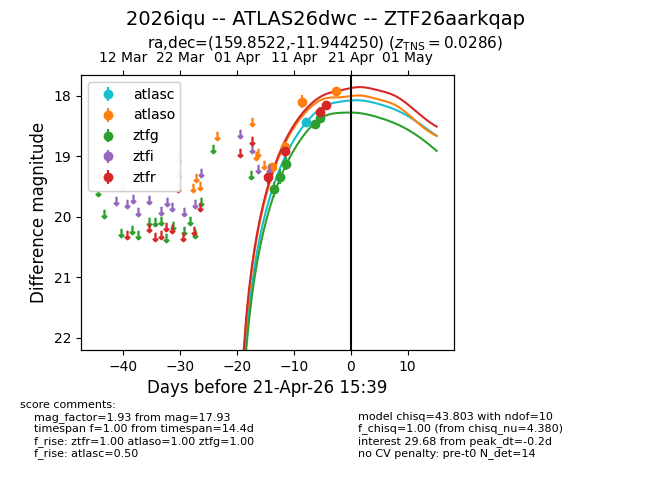
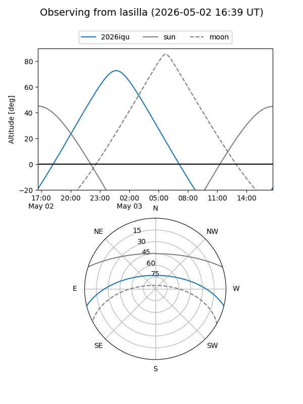
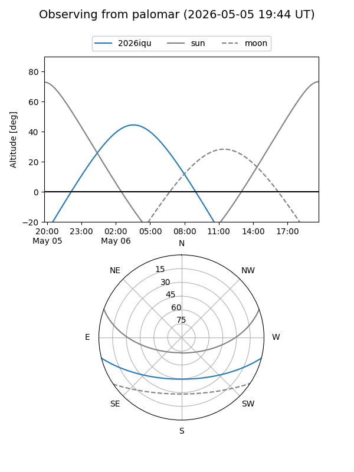
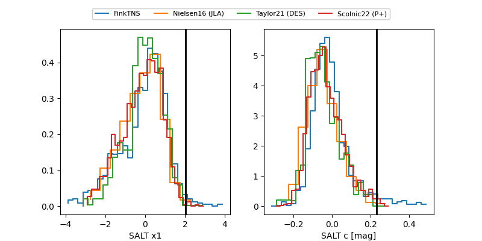

2026iqu
Target 2026iqu at 2026-04-21 15:43
Aliases and brokers:
FINK: link
Lasair: link
ALeRCE: link
TNS: link
YSE: link
alt names
ZTF26aarkqap (ztf,fink_ztf)
2026iqu (tns,yse)
ATLAS26dwc (atlas)
Coordinates:
equatorial (ra, dec) = 159.8522,-11.94425
equatorial (HMS+DMS) = 10:39:24.52,-11:56:39.30
galactic (l, b) = (259.2626,+39.48052)
Flags:
Photometry:
last atlasc=18.43, atlaso=17.93, ztfg=18.37, ztfr=18.16
1 atlasc, 4 atlaso, 5 ztfg, 4 ztfr detections
Lightcurve

Visibility


Additional plots
